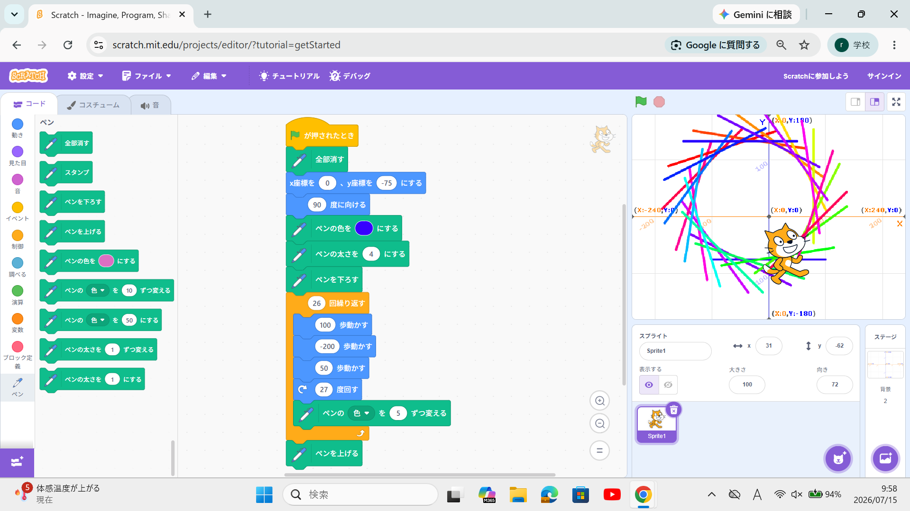
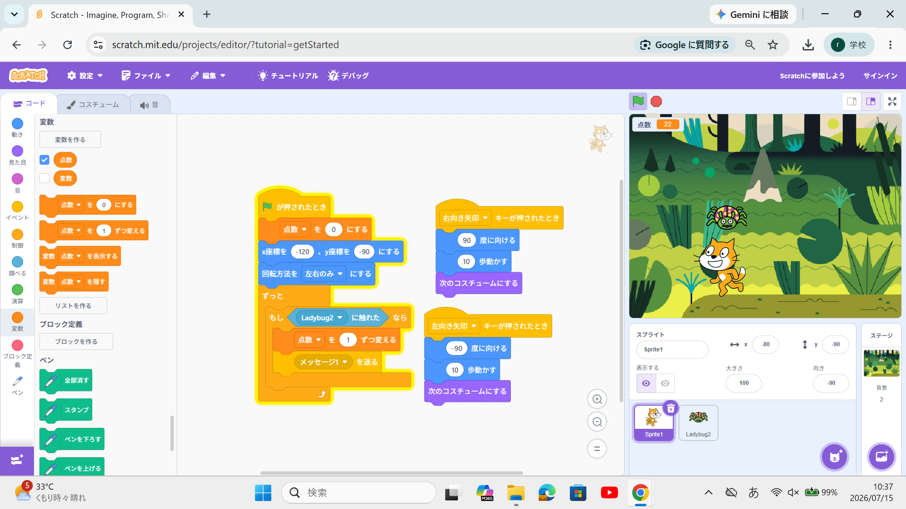

1週目のレポート ： 公大高専１年実習I-1
1a班13番 彪
第1週目
1-1 サイエンスアート

1.内容
Scratchを用いてプログラミングを行い、
回転や移動のブロックを組み合わせて
幾何学的なラインアートを描く方法を学んだ。
プログラムの数値を変えることで多様な図形を作成できる仕組みを理解した。
2.感想
ブロックを少し変更するだけで描かれる図形が大きく変化し、
視覚的に楽しみながらプログラミングの基礎を学習できた。
自分の意図した通りの美しい図形が完成した際は大きな達成感が得られた。
1-2 ゲーム

1.内容
Scratchを使って、上から落ちてくるリンゴを
スプライトである猫を操作してキャッチするアクションゲームの作成手順を学習した。
条件分岐や変数を活用した得点処理の仕組みについて理解を深めた。
2.感想
実際に自分で動かせるゲームを作成することで、
プログラムがどのように動作しているのかを
体感的に学ぶことができた。
キャッチした際の判定などを
工夫して動かす作業が非常に面白かった。
1-3 ホームページ作成
私のホームページ
1.内容
GitHubを用いてHTMLによるWebページの
作成方法や基本構文を学習した。
実習での成果物やレポートを整理し、
自分専用のホームページとして
インターネット上に公開する手順を体験した。
2.感想
自分でコードを書いてWebページがブラウザ上に表示された際、
情報発信の技術を身につけられたと感じた。
これからもコードの勉強をしたいと考えている。
各ページへのリンク
1週目のレポート
2週目のレポート
3週目のレポート
私のホームページ